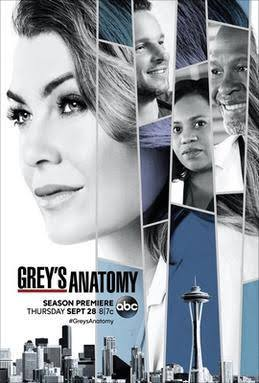
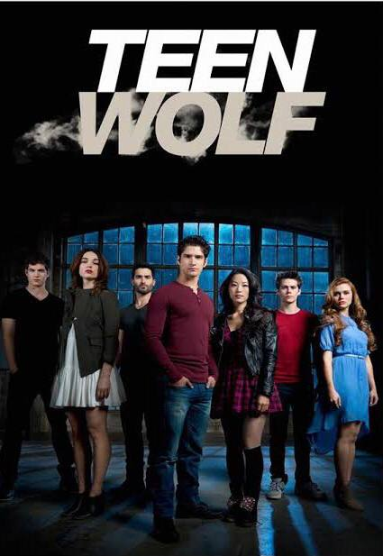

A série médica de enorme sucesso foca em um grupo de jovens médicos do Hospital Grace Mercy West, de Seattle,
que começaram a carreira na própria instituição como residentes. Um dos jovens médicos que dá nome ao show,
Meredith Grey, é filha de um famoso cirurgião. Meredith luta para manter as relações com seus colegas,
especialmente o chefe do centro cirúrgico, Richard Webber, devido ao relacionamento que já existia entre os
dois.

O anonimato de colégio do qual Scott McCall estava tentando se livrar não poderia ter
acontecido de uma forma mais misteriosa e complicada. Enquanto caminhava pela floresta uma noite, Scott
encontrou uma criatura, levou uma mordida e teve sua vida mudada para sempre. Ele é humano ou um lobisomem?
Ou um pouco dos dois? Controlar as estranhas necessidades que agora sente é a parte mais dura, e o jovem teme
que os impulsos é que acabarão controlando-o. Será que a mordida foi uma bênção ou uma maldição, especialmente
relação à maliciosa Allison, de quem Scott nunca se cansa?
O investigador forense Barry Allen (Grant Gustin) sofre um acidente em seu laboratório: ele
leva um banho de produtos químicos e, em seguida, é atingido por um raio. A partir disso, ele se torna capaz
de canalizar os poderes do "Campo de Velocidade" e de se locomover com uma rapidez sobre-humana.